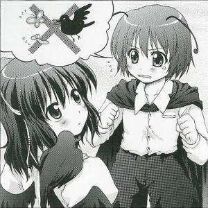

>The New Insects' News Service
For Improving the Status of InsectsThe insect spirit Wriggle Nightbug (youkai) has begun sending out huge amounts of insects for the "Insects' News Service."
This is hoping to improve the low social status of insects.
What comes to mind on the subject of bugs?
Maybe most people don't think of anything beyond food rations or garbage.
These days, they have no more than that degree of recognition.
The leader of the bugs who are bothered by the present condition, in order to distrupt the status quo, has proposed the idea for this service.
The idea behind this service is that, if given plans and a time in advance, a huge number of insects would come and make announcements.
For example, if someone asked for a morning call, a huge amount of insects would gather together on their futon and gently wake them.
The bugs aren't just winged types; insects with many legs could also be used, allowing for plentiful variations.
I asked Ms. Wriggle to speak about this service.
"I want people to realize that bugs are helpful, too. These days, everyone just makes fun of us, and it's getting annoying. They think even fireflies and pine crickets are just for display. When did humans start thinking they are such superior beings? However, if we harm humans, they might exterminate us... Therefore, if we can put an end to the idea that we aren't necessary in their lives, I think our social status would improve."
Ms. Wriggle is managing this new service with her ability to manipulate insects.
Users are saying things like "I broke out in a cold sweat and woke up right away" and "With that rustling sound next to your ears, you can hardly contain yourself", so it seems to have a favorable reputation so far.
However, Ms. Wriggle added "We got tired of it, so we will probably stop soon." afterward.
The life of insects is short, so it makes sense that the life of the Insects' News Service would also be short.
AD: We buy and sell all kinds of used furniture, art, and household goods. Second-hand shop Kourindou, located right outside the Forest of Magic.
Wriggle 
What? We're doing something like this?
Aya
You mean your article? It was only the other day I was collecting data for it, wasn't it?
Wriggle
I don't remember.
Aya
I wonder how small the brains of insects are?
Wriggle
It's not like that, we omit information as soon as it's no longer in use. Otherwise, we can't provide the Insect News Service. Because we can't remember the schedules of our customers.
Aya
What, you remember that after all.
Wriggle
I can't remember.
Aya
I feel that in the past the power of insects was stronger. They would act as parasites on human beings, and they had stronger poisons... There were quite a few that could defeat even yokai with a single sting.
Wriggle
So the ones now are weak?
Aya
They are. In the past many poisonous bugs would battle, and the last one standing would earn the knowledge of magical power. That was a dreadful thing. If you compare it to then, we only discover insects now to be of your level. So, you're all show aren't you?
Wriggle
It makes me sad that you'd say it like that...... ooh...
Aya
But this crow loves insects.
Wriggle
Heh, we have another natural enemy here~
Aya
That's why humans call them beneficial birds.
Wriggle
Don't assume things like that! I feel that recently, to make matters worse, the number of bugs is decreasing year after year.
Aya
Isn't that good? Well, if the number of bugs decreases, the birds have something to worry about.
Wriggle
Whether there's not enough of us or we're being eaten we're worried... but more than that the problem is insecticide!
Aya
Insecticide? Ah, that handy tool created by humans?
Wriggle
Thanks to that my sweet bugs have turned to nothing.
Aya
They're weak.
Wriggle
You said that bugs used to survive things like poison, right? These attacks aren't at that level.
Aya
When did I say that? Isn't this a chance?
Wriggle
What chance?
Aya
If you keep collecting the bugs that survive the insecticide, only the bugs who aren't affected by the insecticide will remain. You make new generations increasing their number for a while in this way.
Wriggle
Oh-ho...
Aya
But in the meantime, the humans can make a stronger and savage insecticide.
Wriggle
......
Aya
And then you collect only the unaffected bugs, and increase their number again, and if the pattern continues...
Wriggle
Won't it only help making an invincible insecticide?
Aya
But the humans have to make sure the insecticide won't hurt them as well, so there's a limit to how strong they can make it. Once that limit is reached, bugs will no longer be defeated by humans.
Wriggle
I see. It sounds like it would take quite long, so I should work harder...
Aya
But please feed the birds too, OK?
Profile:
Wriggle Nightbug
A youkai who has an ability to control insects.
Since she is also an insect herself, she is vulnerable to coldness and insecticide.
Appearances:
Imperishable Night